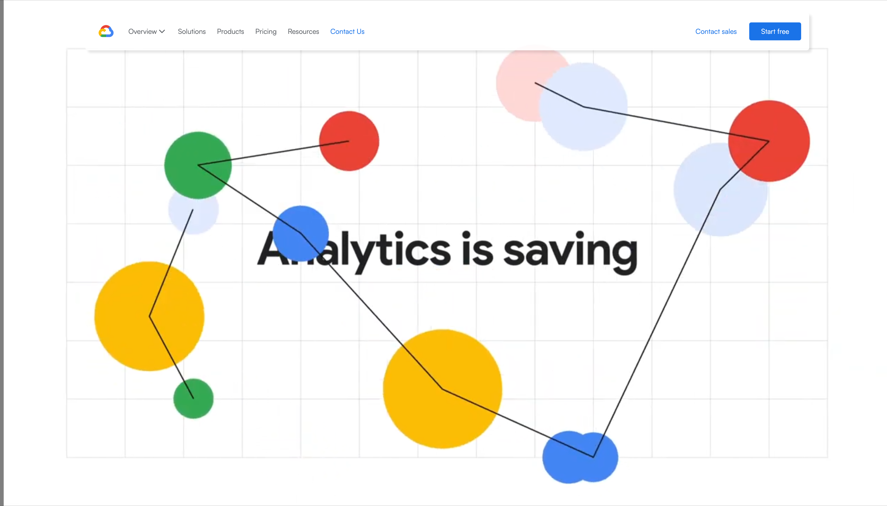
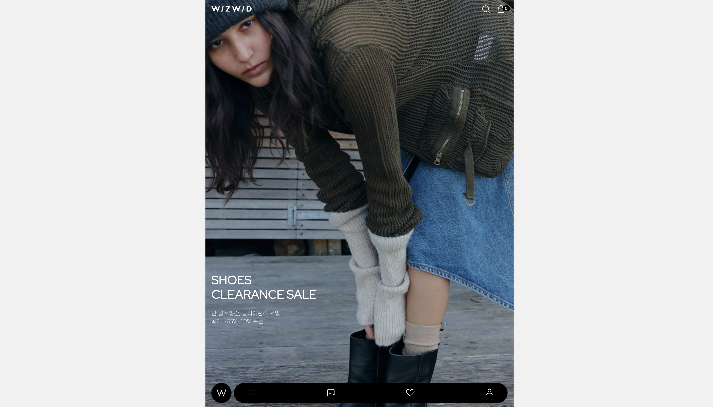

I
CREATE
CREATE
MEMORABLE
_WORKS
-
Creative

- Responsible
-
Passion

-
Cooperation

-
Considerate

About me
"Just do it!" 좋아하는 일을 위해 더 나아가고자 항상 노력합니다.
시멘틱태그를 활용한 마크업으로 뼈대가 탄탄하고 명확한 웹구조로
프로덕트가 사용자들의 기억에 남는 일을 하고 싶습니다.
main
project_

01Google Cloud (PC)
Google Cloud를 테마로 archipelago productions, google등 래퍼런스 사이트를 참고하여 리뉴얼한 PC적응형 사이트입니다.
link
02SIGN-CMS (PC)
Sign-cms를 클론코딩한 PC 반응형 사이트이며, 자바스크립트 라이브러리인 Swiper, GSAP을 이용해 구현한 사이트입니다.
link

03WIZWID (MOBILE)
위즈위드를 클론코딩한 모바일 사이트이며, json을 이용해 직접 데이터를 담아두고 데이터 바인딩을 통해 컨텐츠와 메뉴를 불러오는 작업을 중점으로한 사이트입니다.